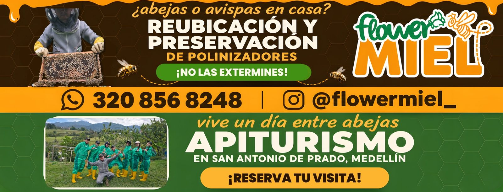
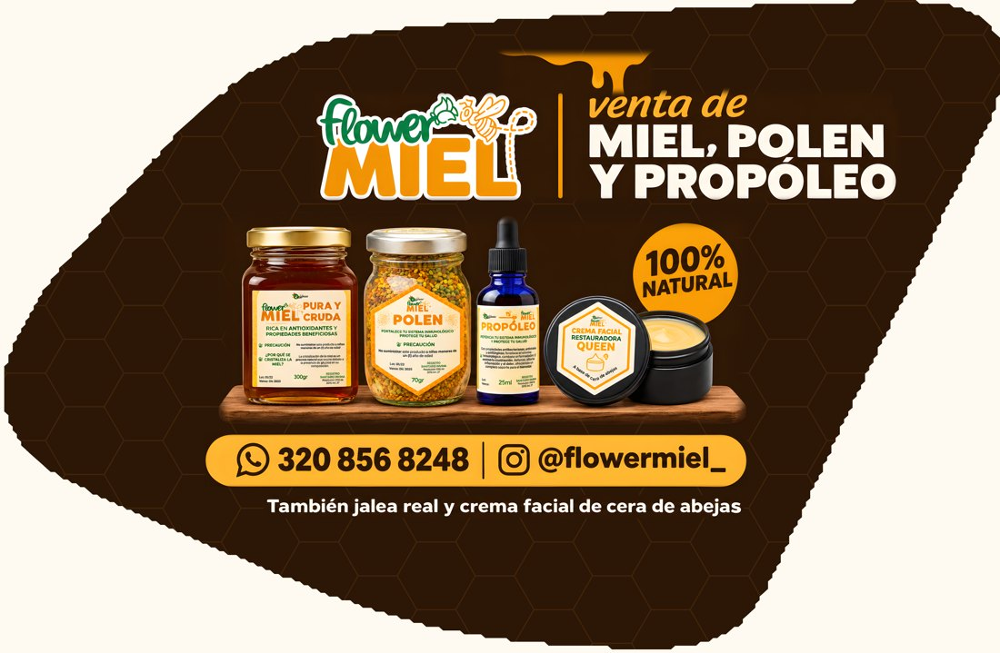
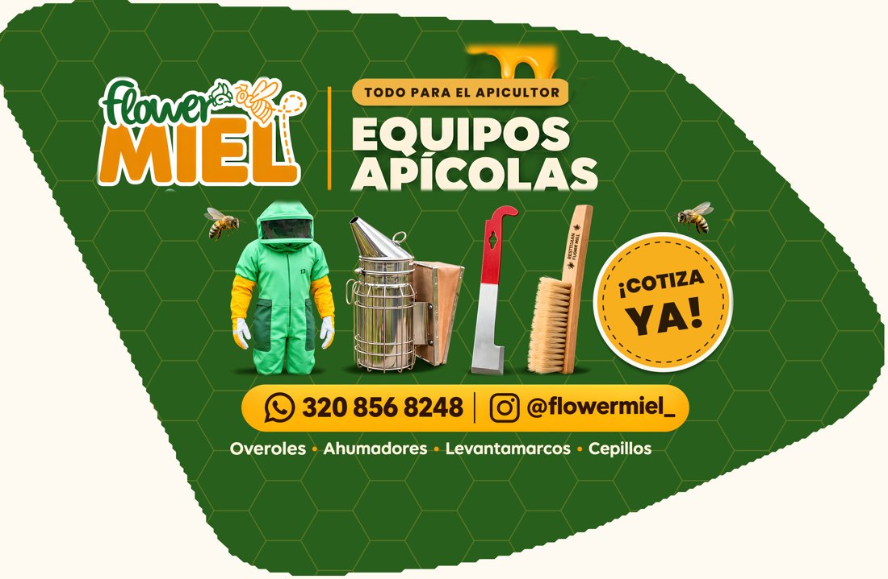

Versión 2: los dos laterales rediseñados con la forma real del vidrio fijo pequeño de atrás, para que nada se corte al instalarlos. El vidrio trasero es el mismo de la versión 1. Arrastra la foto hacia los lados para darle la vuelta al carro, usa las flechas o toca una miniatura.
Medidas finales de cada vidrio. Cada PDF lleva 1,5 cm de sobrante por lado. Los laterales traen además una guía de corte con el contorno del vidrio.



En esta versión los laterales siguen la forma del vidrio fijo pequeño (sacada de una foto de perfil de una Duster Dynamique y ajustada a 46 × 30 cm). Todo el contenido queda al menos 1,5 cm dentro del borde, y el fondo sigue por fuera como sobrante. La guía de corte muestra el contorno en rosado. Antes de imprimir, conviene que el instalador compare la guía con el vidrio real (por ejemplo, calcando el vidrio en papel).
Las fotos del carro son una simulación hecha con IA para tener una idea del resultado: la placa, el entorno y algunos textos pequeños son inventados. Los archivos de imprenta son los PDF de arriba.